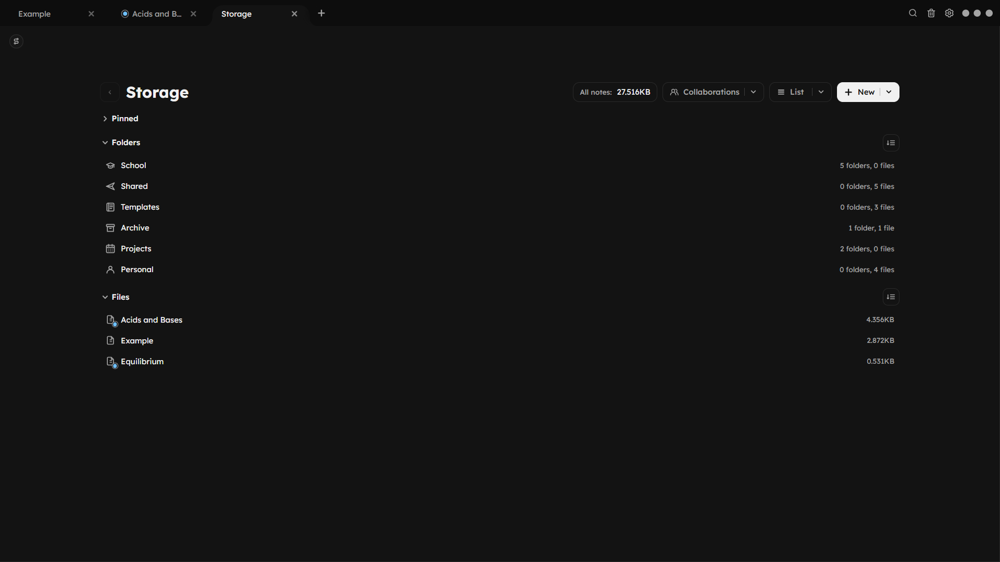

Local-first storage
See every folder and file in a clean list layout.
Everything stays on your device by default, so your notes remain fast, private, and available offline. Enable cloud sync only on the notes that need collaboration or version history.